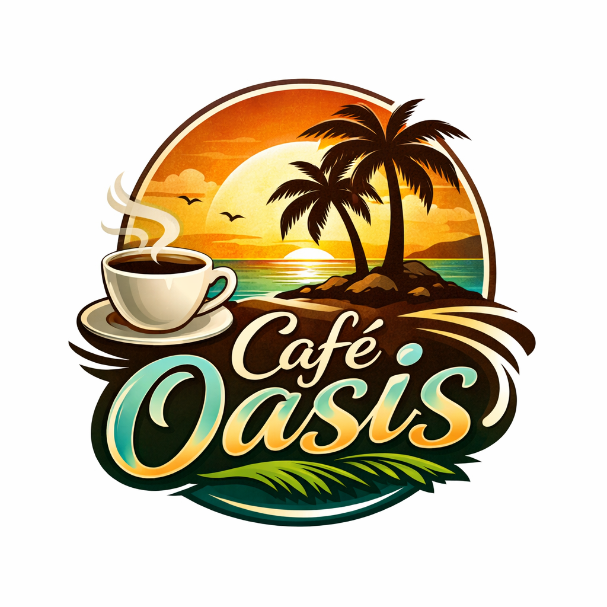
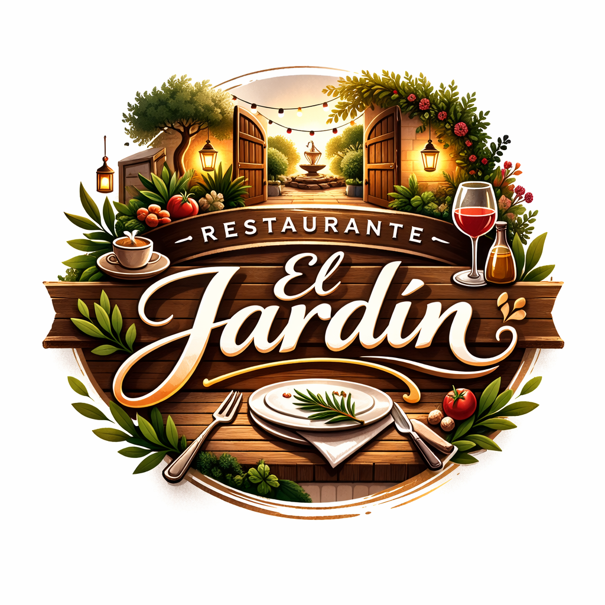
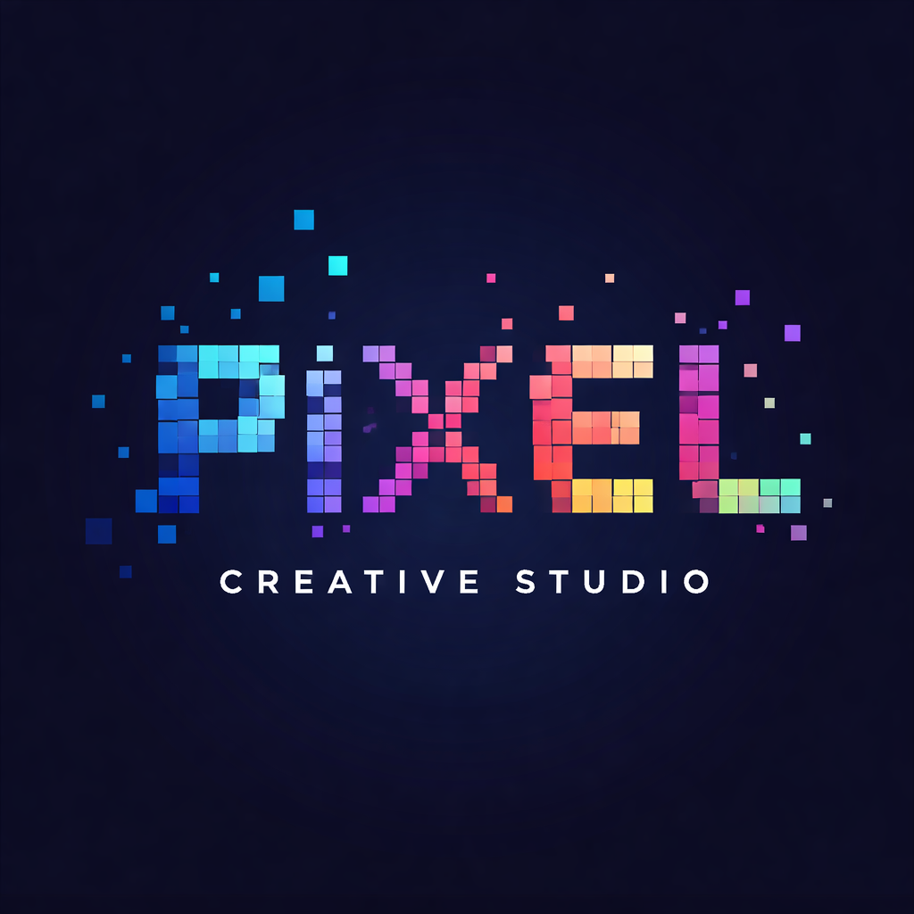

Lo que dice nuestra comunidad
"La calidad del café de Slow Coffee es excepcional. Se nota el cuidado artesanal en cada grano. Las entregas siempre llegan a tiempo y el café está perfectamente fresco. Es mi ritual de cada mañana."
"Llevamos 6 meses trabajando con Slow Coffee en nuestra cafetería. Nuestros clientes notan la diferencia. La puntualidad en las entregas es impecable y la calidad siempre consistente. Un proveedor de confianza."

Café Oasis"Buen café artesanal, aunque me gustaría que hubiera más variedad de orígenes. La entrega es puntual y la calidad es correcta. El precio es adecuado para lo que ofrecen."
"Como restaurante, la imagen que proyectas con tu café importa. Slow Coffee nos ayuda a ofrecer una experiencia premium a nuestros comensales. La entrega es siempre puntual y la calidad artesanal habla por sí sola."

Restaurante El Jardín"Me suscribí hace tres meses y la calidad del café es buena. Las entregas son puntuales. Aunque el precio es un poco elevado, la frescura del producto lo compensa. Seguiré probando más variedades."
"Nuestra oficina cambió a Slow Coffee hace 4 meses. El equipo nota la diferencia en la calidad y nosotros en la fiabilidad de las entregas. Café artesanal que motiva las mañanas. Muy contentos con el servicio."

Estudio Creativo PixelÚnete a nuestra comunidad de suscriptores
Exclusivo para suscriptoresConviértete en parte de algo especial. Nuestros suscriptores no solo reciben café fresco cada mes, también forman parte activa de nuestro proceso artesanal.
- Acceso anticipado a lanzamientos exclusivos
- Descuentos en talleres y catas artesanales
- Participación directa en decisiones de tueste
- Entregas flexibles adaptadas a tu consumo
- Comunidad privada de amantes del café
Sin permanencia. Cancela cuando quieras.